SECCIÓN
esquemas y diagramas DE CABLEADO
Diagrama de cableado del ECM (0.8L/1.0L SOHC - 1 de 7) - Alimentación, masa, datos serie
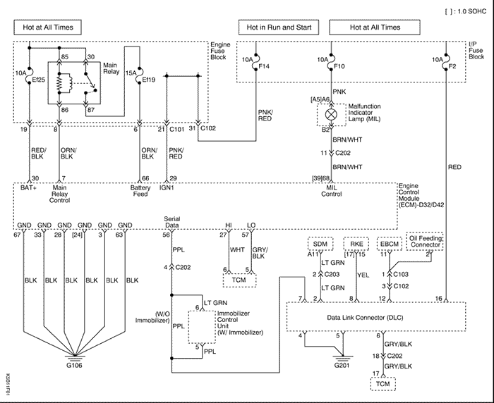


Diagrama de cableado del ECM (0.8L SOHC - 2 de 7) - Sensores (IAC, TP, ECT, IAT, MAP, VSS)
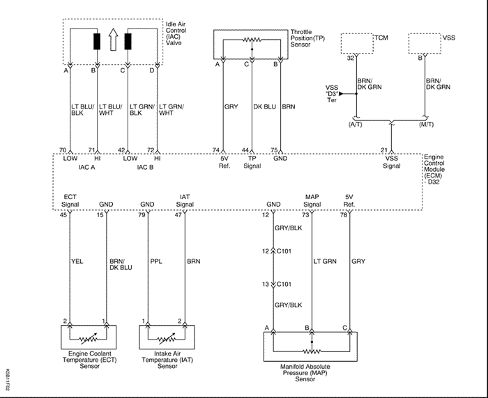
Diagrama de cableado del ECM (1.0L SOHC - 3 de 7) - Sensores (MTIA, ECT, IAT, MAP, VSS)
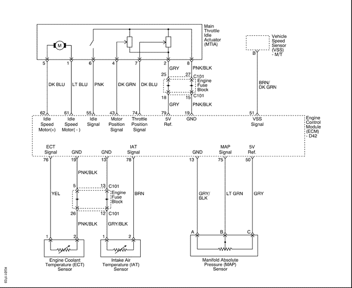
Diagrama de cableado del ECM (0.8L/1.0L SOHC - 4 de 7) - Sensor de oxígeno
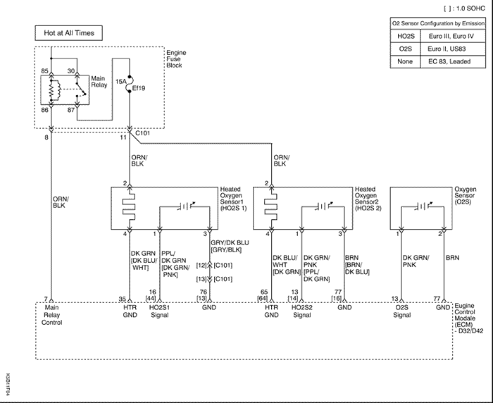
Diagrama de cableado del ECM (0.8L/1.0L SOHC - 5 de 7) - Controles de encendido (bobina de encendido del sistema EI, CKP, CMP, KS, carretera irregular)
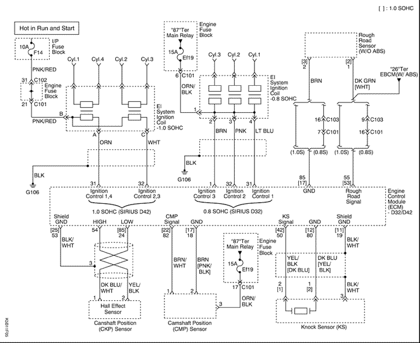
Diagrama de cableado del ECM (0.8L/1.0L SOHC - 6 de 7) - Controles de encendido (bomba de combustible, inyectores)
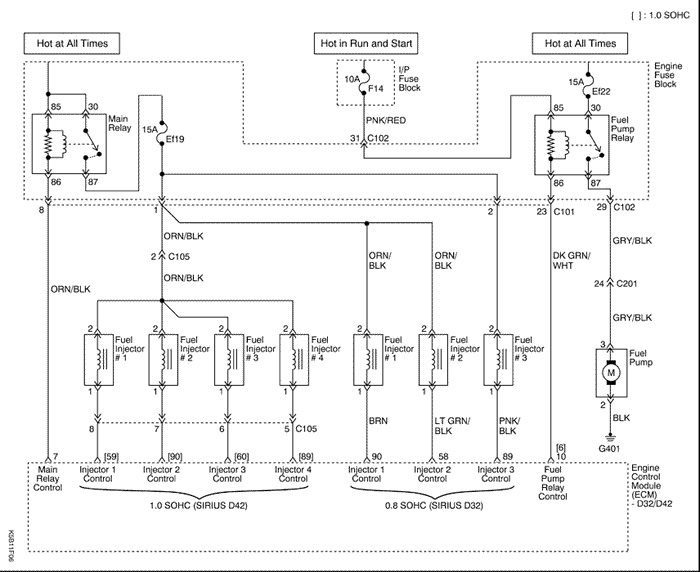
Diagrama de cableado del ECM (0.8L/1.0L SOHC - 7 de 7) - EVAP y otros (solenoide de purga, EEGR, sensor de nivel de combustible, interruptor de RON)
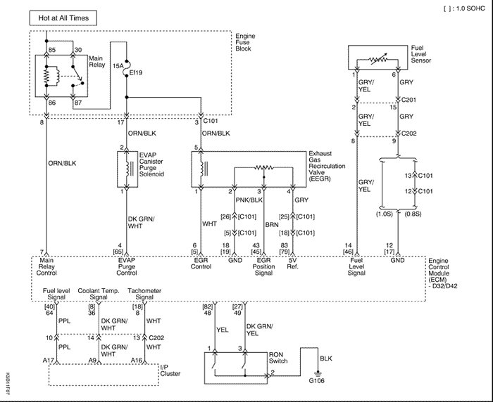
LOCALIZACIÓN DE COMPONENTES
Localización de componentes (0.8/1.0L SOHC)
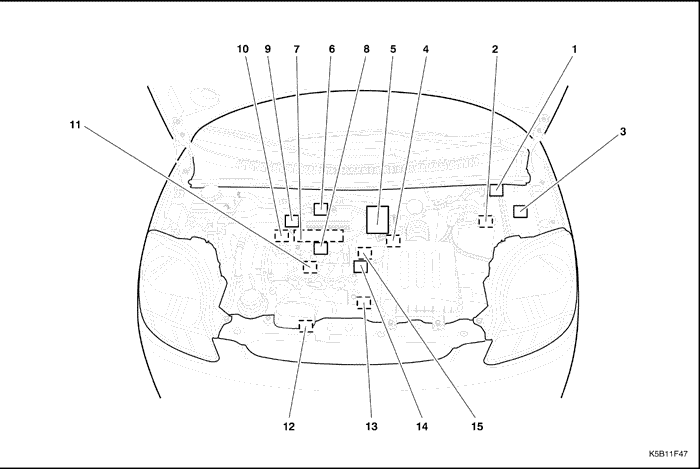
- ECM
- DLC (habitáculo)
- Caja de fusibles y relés
- Recirculación de los gases de escape (EGR).
- Cuerpo del acelerador (MTIA, IAC, sensor de TP
- Sensor de presión absoluta del colector de admisión (MAP)
- Inyectores
- Bobina de encendido
- Sensor de temperatura del aire de admisión (IAT)
- Solenoide de purga del EVAP
- Sensor de picado de las bielas
- Sonda lambda calentada (Sensor 1)
- Sensor de posición del cigüeñal (CKP)
- Sensor de posición del árbol de levas (CMP)
- Sensor de temperatura del refrigerante del motor (ECT)
Vista del extremo del conector
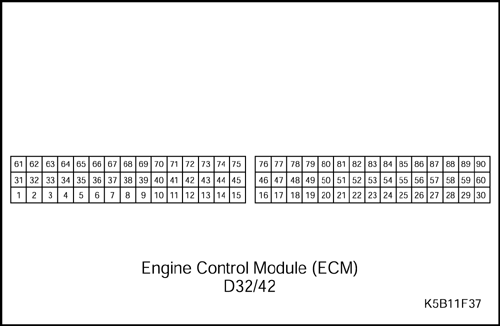


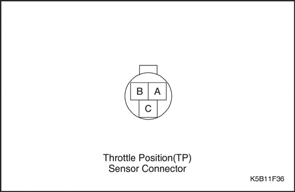
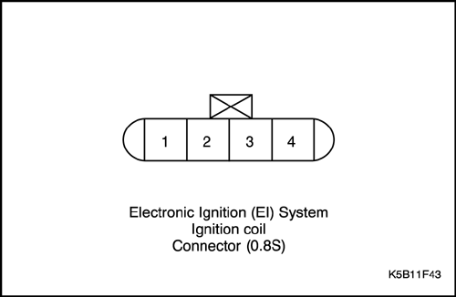
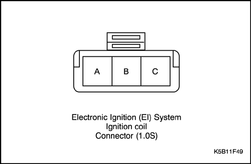
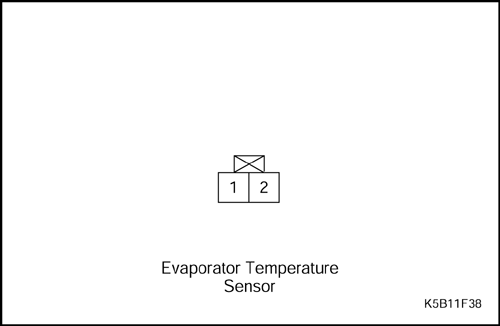
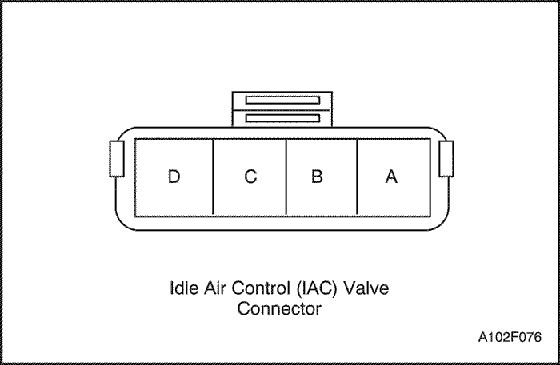
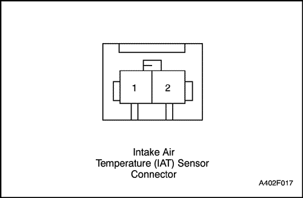
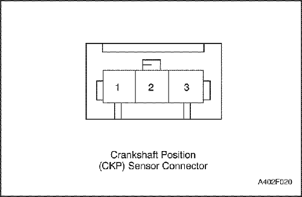
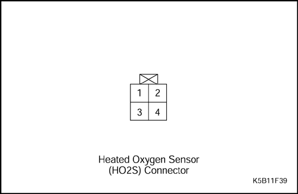
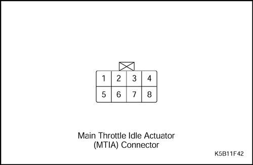
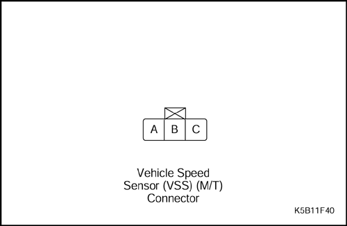
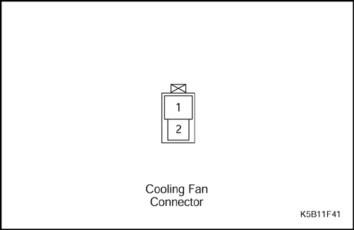
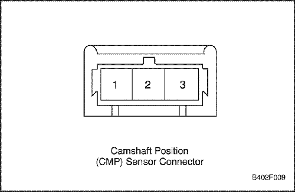
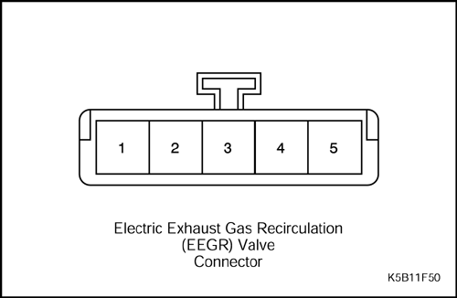
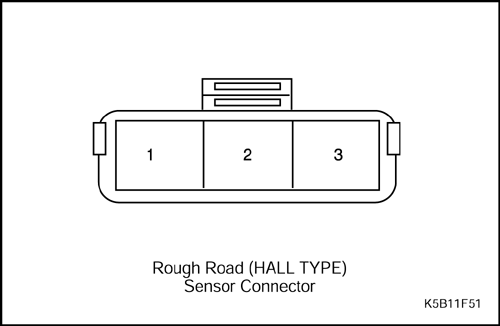
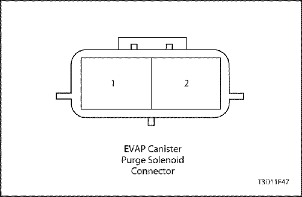
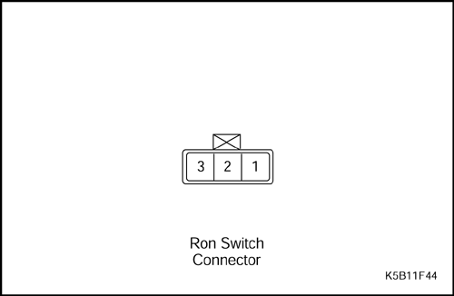

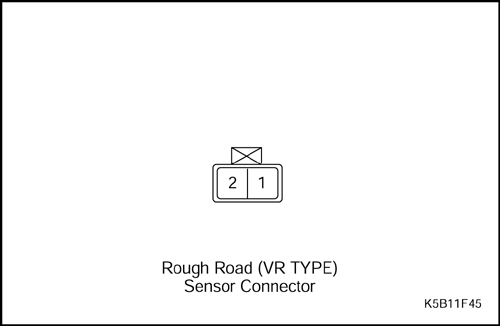
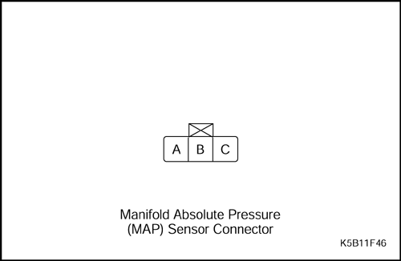